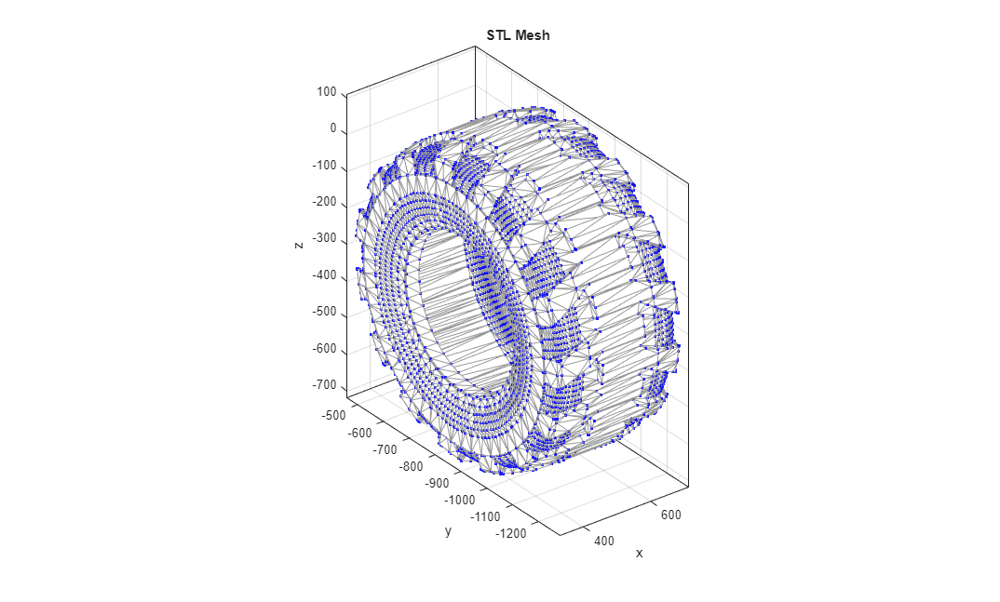
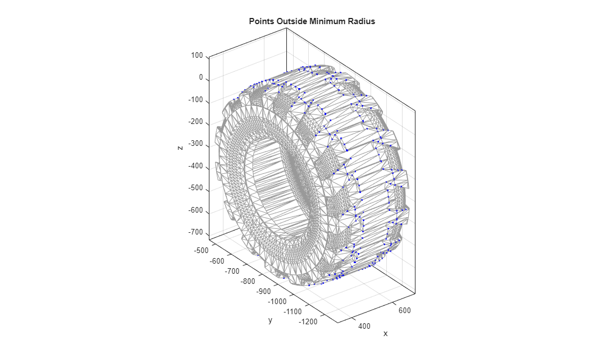
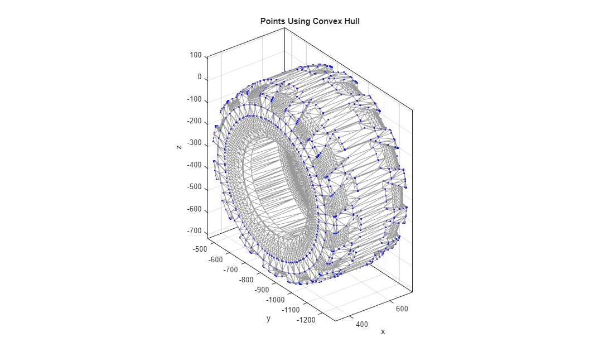
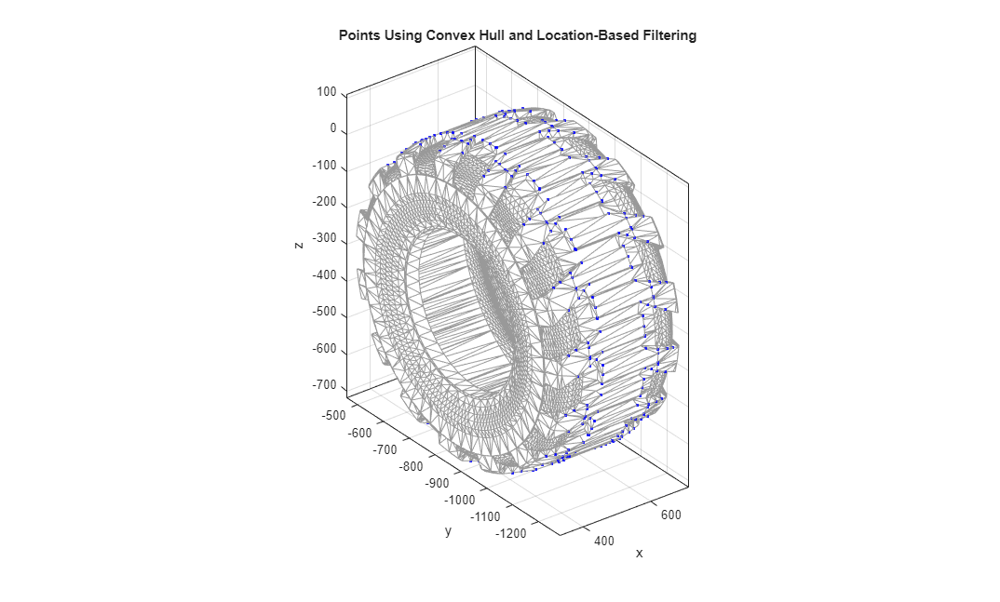
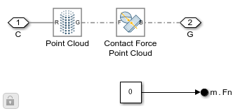

Extracting Point Cloud from STL Geometry: Wheel
This example shows MATLAB commands to obtain coordinates for the point cloud that is used to detect collision between the wheels and the ground terrain. The STL file for the wheel is read into MATLAB, and then a few commands are used to extract just the points that are useful for the contact and friction force calculation.
The code used in the example is mars_rover_terrain_ptcloud_wheel_create.m.
Return to main example Wheel Loader Design with Simscape™
Copyright 2021-2024 The MathWorks, Inc
Contents
Inspect Tire Geometry from STL file
This is the CAD geometry that defines the tire.

Read in the STL file, plot mesh
The stlread and trimesh commands are very useful for working with STL files.
figure(1) tire_stl_points = stlread('TireFL_Wheel_Loader.STL'); trimesh(tire_stl_points,'EdgeColor',[0.6 0.6 0.6]) hold on plot3(tire_stl_points.Points(:,1),tire_stl_points.Points(:,2),tire_stl_points.Points(:,3),'b.') hold off axis equal box on title('STL Mesh') xlabel('x');ylabel('y');zlabel('z');
Filter Points Based on Location
As the data is all in x-y-z coordinates, we could look for points on the edge of the wheel on the tips of the fins. With STL files, you sometimes need to eliminate duplicate points using the MATLAB command unique. The code below finds points on the wheel edge that are outside a specified radius.
% Obtain unique points tire_stl_points_unique = unique(tire_stl_points.Points,'Rows'); % STL may not be centered at [0 0 0] % Obtain center point from CAD import in mm ctrPt = Wheel_Loader.coordSys(39).transform.translation'*1000; % Calculate radius for each point in the yz-plane (distance from center) radPts = vecnorm(tire_stl_points_unique(:,[2 3])-ctrPt(:,[2 3]),2,2); % Only include points more than 400 mm away from center rimInds = intersect(find(radPts>400),find(radPts<450)); tread_points = tire_stl_points_unique(rimInds,:); figure(2) trimesh(tire_stl_points,'EdgeColor',[0.6 0.6 0.6]) hold on plot3(tread_points(:,1),tread_points(:,2),tread_points(:,3),'b.') axis equal box on hold off title('Points Outside Minimum Radius') xlabel('x');ylabel('y');zlabel('z');
Filter Points Using Convex Hull
Another method which is useful is extracting the points that form a convex hull. This is the smallest set of points that completely contains the shape, which for our wheel is useful. The resulting set would work for modeling contact between the wheel and the ground, but has many more points than we need for relatively smooth terrain.
Obtaining this set of points uses delaunayTriangulation and convexHull.
wheel_stl_points_tri = delaunayTriangulation(tire_stl_points_unique); cvh_inds = convexHull(wheel_stl_points_tri); % Use unique to eliminate duplicate references to points cvh_points = unique(wheel_stl_points_tri.Points(cvh_inds,:),'Rows'); figure(3) trimesh(tire_stl_points,'EdgeColor',[0.6 0.6 0.6]) hold on plot3(cvh_points(:,1),cvh_points(:,2),cvh_points(:,3),'b.') axis equal box on hold off title('Points Using Convex Hull') xlabel('x');ylabel('y');zlabel('z');
Reduced Set of Points using Convex Hull and Location-Based Filtering
Combining these two techniques we can obtain a set of points that is sufficient to accurately model contact and permits efficient simulation.
% Calculate radius for each convex hull point in the yz-plane radCVHPts = vecnorm(cvh_points(:,[2 3])-ctrPt(:,[2 3]),2,2); % Only include points more than 400 mm away from center rimCVHInds = intersect(find(radCVHPts>400),find(radCVHPts<450)); treadCVHpoints = cvh_points(rimCVHInds,:); figure(4) trimesh(tire_stl_points,'EdgeColor',[0.6 0.6 0.6]) hold on plot3(treadCVHpoints(:,1),treadCVHpoints(:,2),treadCVHpoints(:,3),'b.') axis equal box on hold off title('Points Using Convex Hull and Location-Based Filtering') xlabel('x');ylabel('y');zlabel('z');
Use Point Cloud Data in Simscape Model
The point cloud data (x-y-z data) can be used to define a point cloud for use with contact modeling. In the main model, this data is entered into the Point Cloud block.
load_system('wheel_loader_contact_lib'); open_system('wheel_loader_contact_lib/Ground Contact Tire/Points','force')
Point Cloud with Tire STL Geometry
This is the CAD geometry with the point cloud.

bdclose('wheel_loader_contact_lib') close all